挑一页
每天有一页轮换的精选，也可以在 14 本画册里慢慢挑。
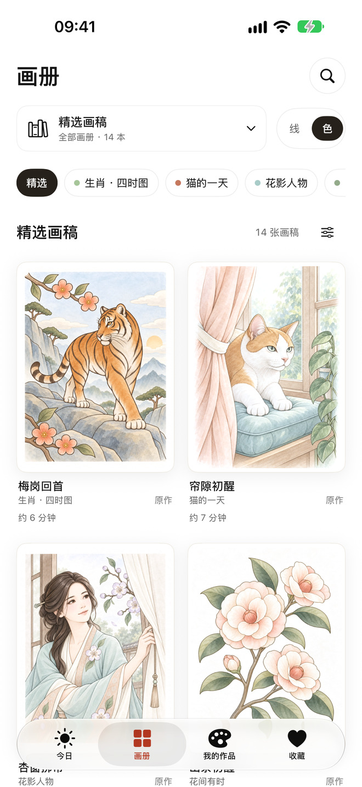
新版 2.3八种笔触叠色更自然 · 水彩柔边晕染 · 新增永久买断 以 App Store 更新为准
一页画，一点心情
从一幅喜欢的画开始，慢慢涂。把今天的心情、作品和几句话，收进只属于你的日记。


01 / 翻开画册
从一枝花、一只猫，到四时风物与幻想小屋。每幅画都配好了参考配色，借几种颜色就能开始，也能涂成自己的模样。
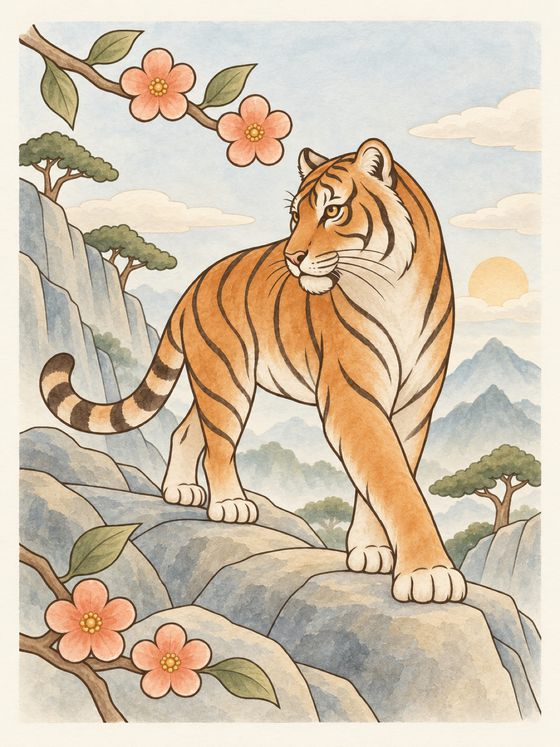
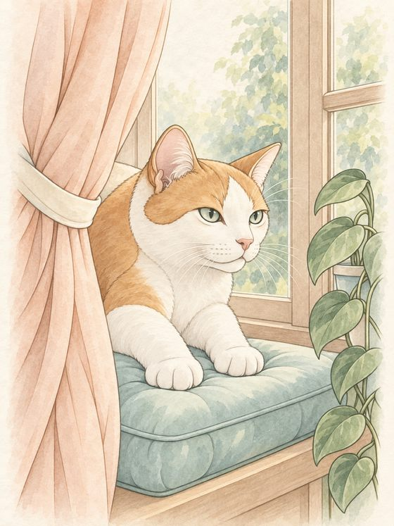
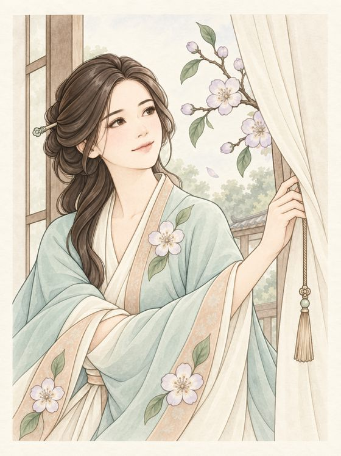
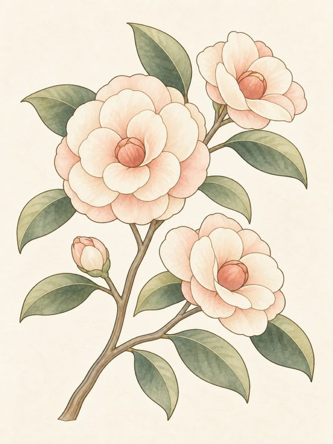
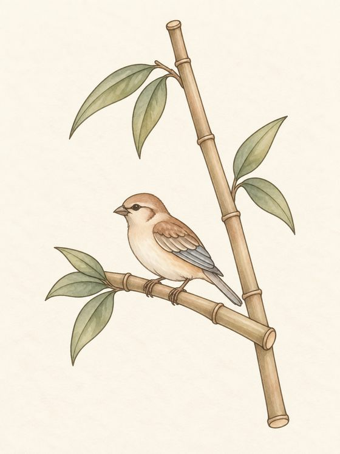
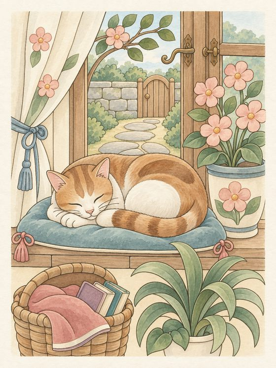
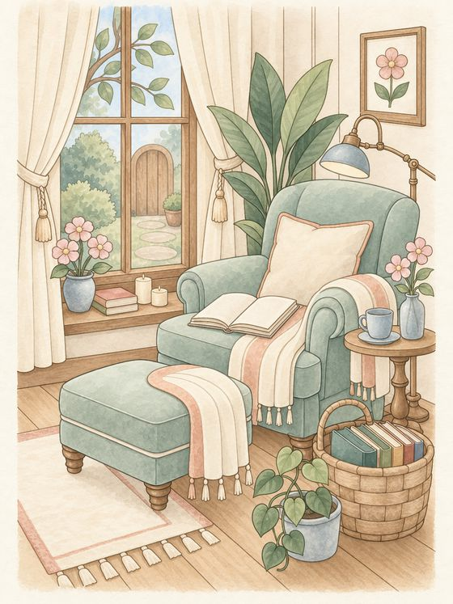
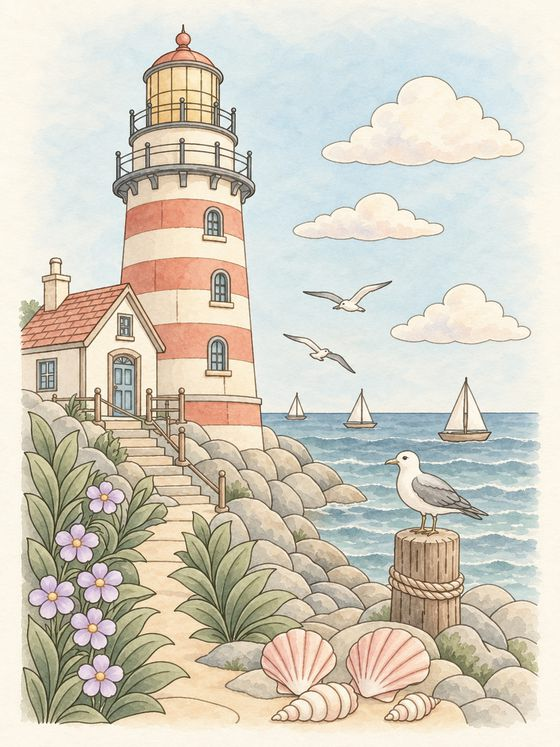
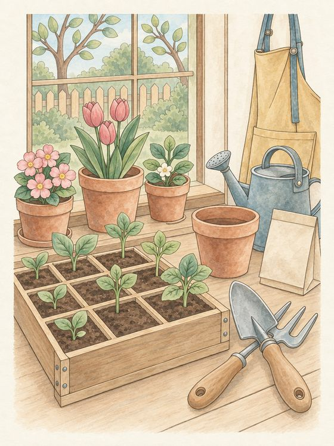
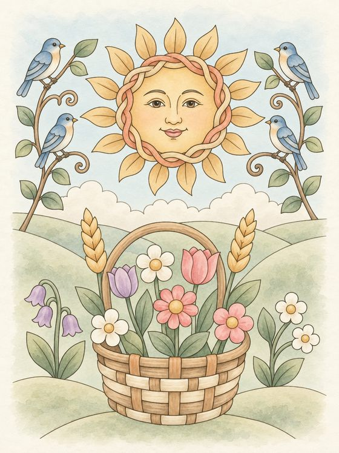
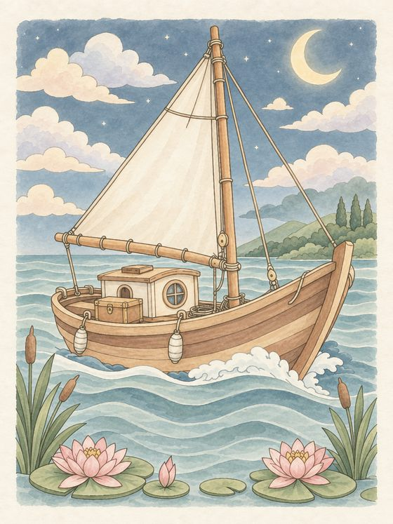
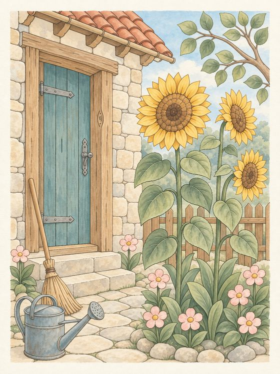
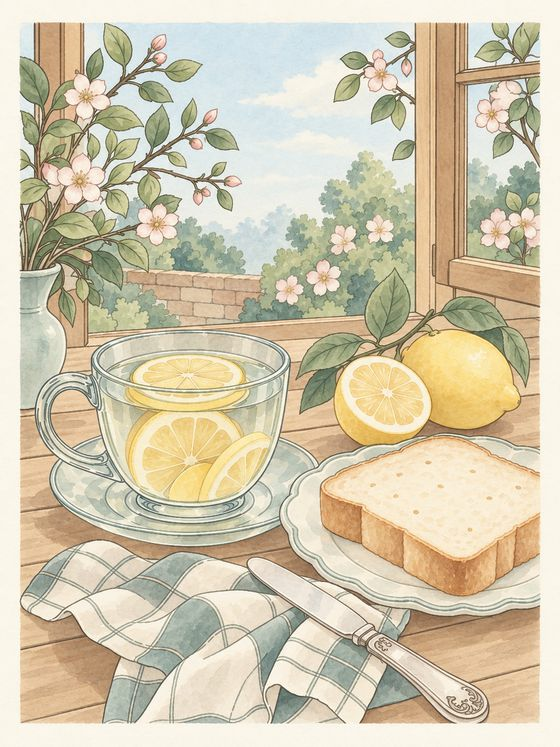
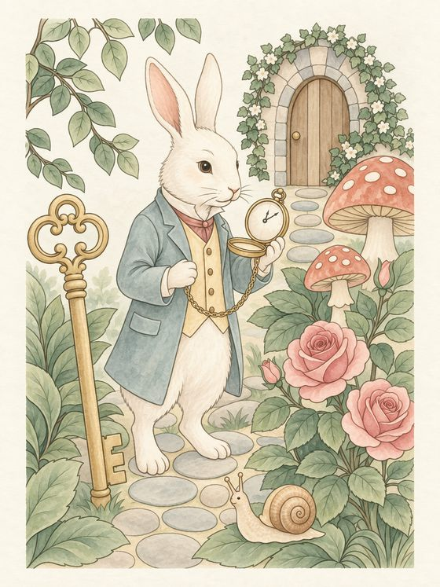
免费从 12 幅入门画稿和每天轮换的一页开始；完整画库由「完整创作权限」解锁。部分画稿使用 AI 辅助创作，并经人工整理、校线与配色。
02 / 怎么开始
不用准备画具，也不用特意找时间。打开 App，挑一页，涂几笔，再记下一点今天。
每天有一页轮换的精选，也可以在 14 本画册里慢慢挑。

轻点填色，或一笔笔画出自己的笔触；停下来时，进度会自动保存。
写几句话、选一个心情、放一张照片——画到一半，也值得记下。

03 / 八种笔触
所有画笔免费使用。轻点就能填满一块，也可以一笔笔铺开水彩与岩彩的质感；图层、色盘、撤销重做都在手边，兼容的 iPad 支持 Apple Pencil。
想偷个懒？打开「辅助上色」，点一下画面上的区域，就按参考配色填好；随时可以切回画笔自由涂。辅助上色属于「完整创作权限」。

04 / 留住今天
涂到一半的画，也可以成为今天的日记。写几句话，放一张照片，选一个心情；或者什么都不写，只留下一抹颜色。
心情可以不选。日记可单独上锁，内容只保存在你的设备上。
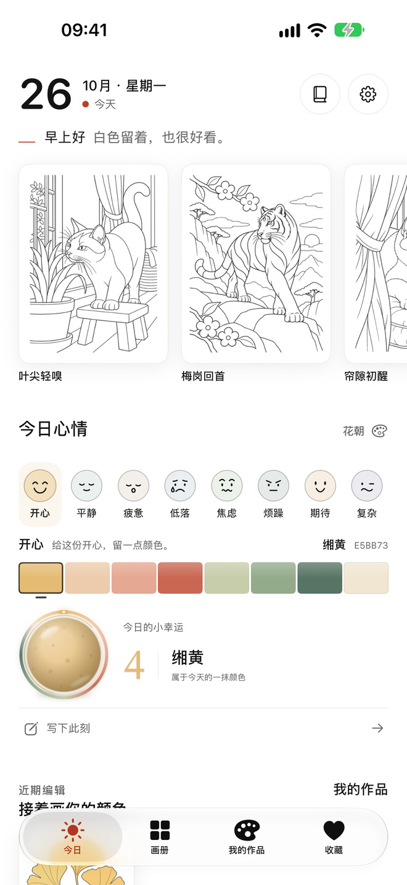
05 / 安静，也是一种用心
不用把生活交给一个新账号。作品与日记保存在本机，由你决定什么时候备份、带走或分享。
打开就能开始，没有广告，也没有行为追踪。
涂色、日记与导出都能离线完成；日记可以单独上锁。
每一笔自动保存，也能导出完整备份，换新设备时导入。
12 幅入门画稿、每天轮换的一页、全部画笔、私人日记与备份，以及标准 2048 像素 PNG 导出。回放与分享卡片带有轻量 App 标识。
解锁完整画库、辅助上色、空白画布、照片与线稿导入，以及 4096 像素和透明 PNG 导出；回放与分享卡片可不带 App 标识。
可选订阅或一次买断永久使用，具体方案与当地价格以 Apple 购买页为准。订阅自动续费，符合条件的账户可享 7 天试用；买断不续费，也不会自动取消已有订阅。有效购买可在 App 内恢复。